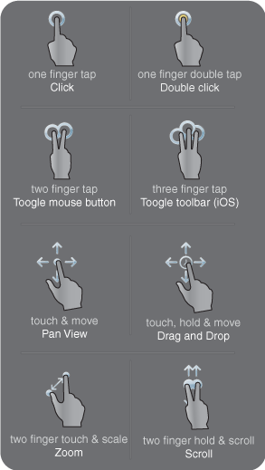
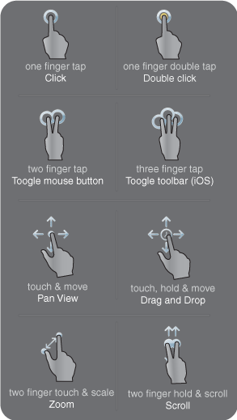

Gesten
aFreeRDP ist für Touch Geräte entwickelt worden. Diese Gesten lassen sie die häufigsten Operationen mit ihren Fingern durchführen.



aFreeRDP ist für Touch Geräte entwickelt worden. Diese Gesten lassen sie die häufigsten Operationen mit ihren Fingern durchführen.
